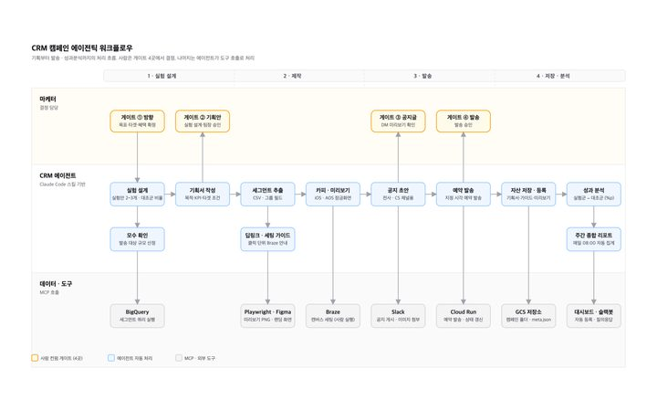
4장스윔레인: 마케터는 4개 게이트에서만 결정, 에이전트가 BigQuery·Braze·Slack·GCS를 호출해 처리
CRM 에이전틱 워크플로우 구축
목적CRM 캠페인 기획·세팅·발송·성과분석 전 과정의 에이전틱 워크플로우 자동화
결과사람은 기획 방향·기획안·공지글·발송 4개 게이트에서만 개입, 주간 종합 성과분석까지 에이전트가 자동 작성
실행 가능한 인사이트 도출로 비즈니스 임팩트를 창출하는 데이터 분석가입니다.
간결하고 직관적인 분석으로 조직의 성과에 기여하며, AI를 적극 활용해 풀어야 할 비즈니스 문제 자체에 집중합니다.
현재 쏘카 CGO 산하 플랫폼데이터팀에서 주차 비즈니스를 담당하고 있습니다. 결과물 31건을 AI 자동화, 데이터 분석, 데이터 인프라, 대시보드 네 영역으로 정리했습니다.
캠페인 기획·세팅·발송·성과분석을 에이전트가 수행하고 사람은 게이트에서만 결정하는 자동화 체계

4장Claude Code로 API·데이터·웹을 오케스트레이션해 만든 분석과 서비스
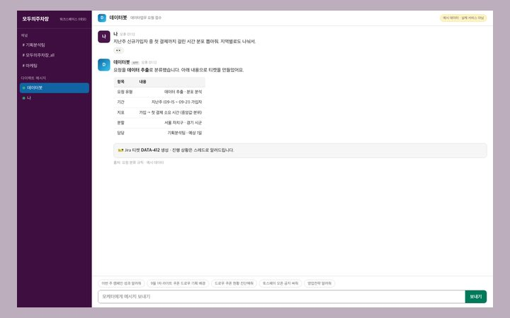
2장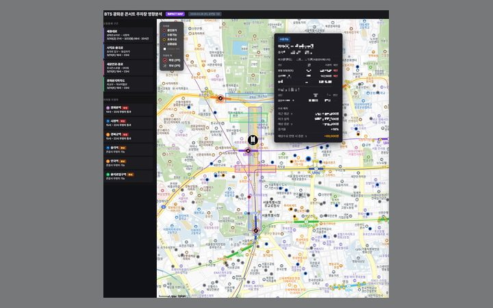
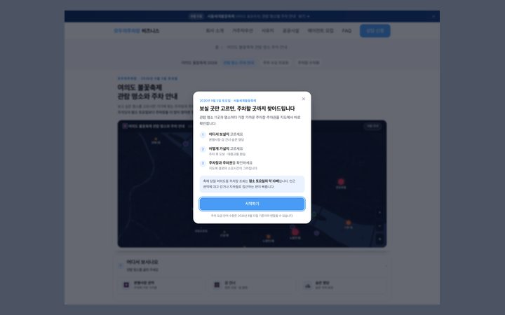
2장실험군 대비 대조군 증분과 평시 기준선으로 캠페인·이벤트 대응의 순효과를 재는 분석, 그 결과를 묻고 보는 슬랙봇과 대시보드
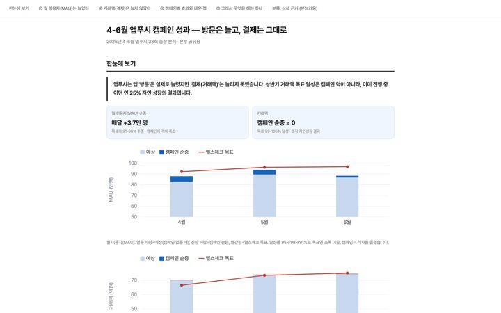
3장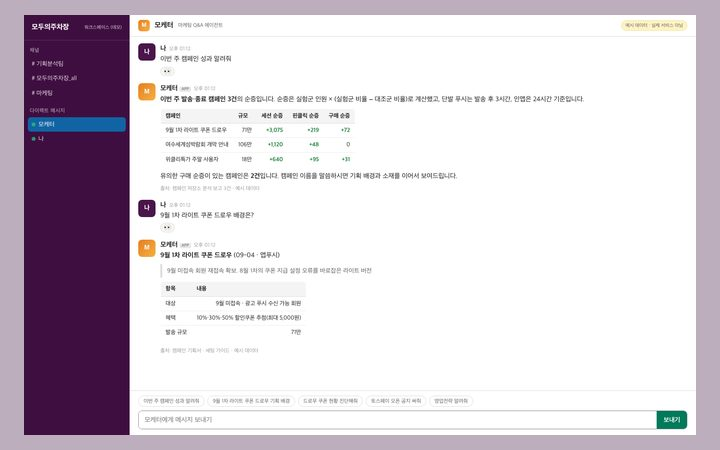
4장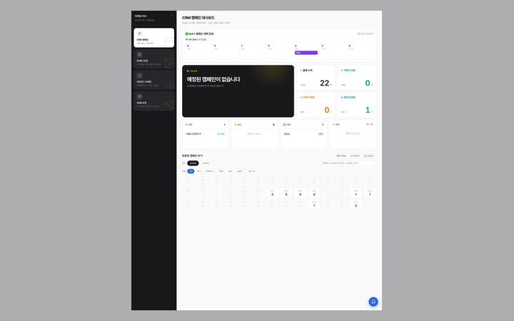
4장미결제·결제 유저군의 접속·행동·주변 공급을 비교해 결제전환 저해 요인을 찾은 분석
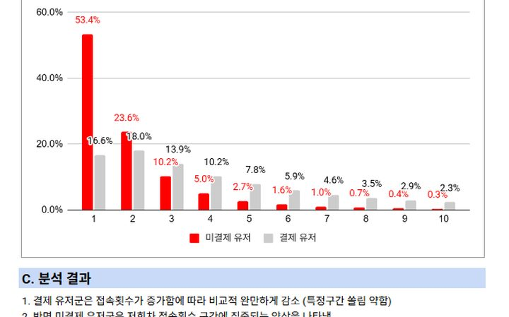
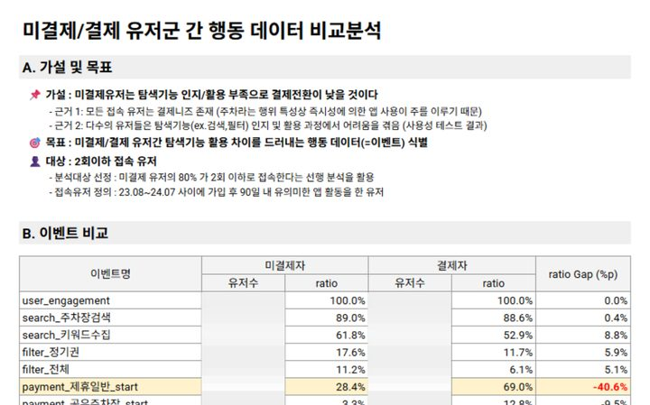
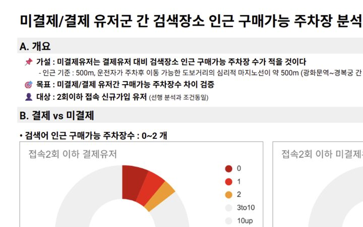
클릭·거래·매진 데이터로 영업 액션을 제안하고 변경 효과를 추적하는 프로세스와 대시보드
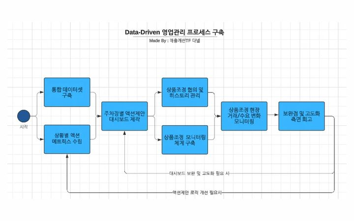
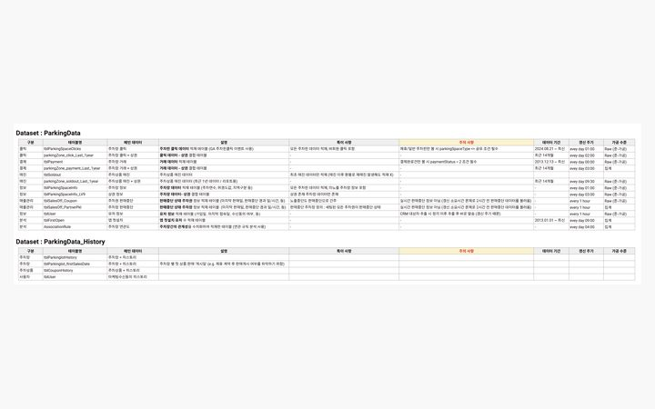
3장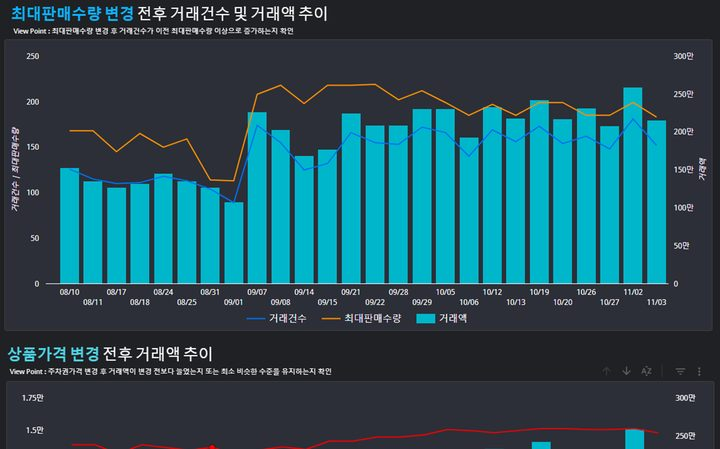
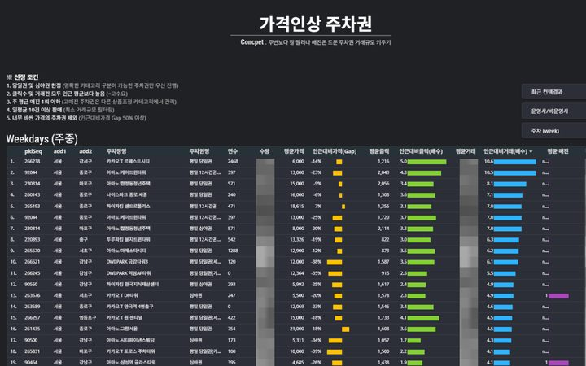
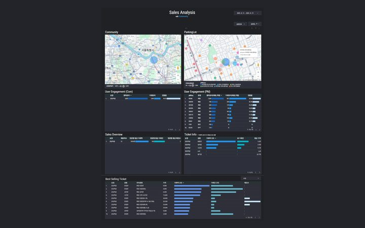
쿠폰 지급 조건 설계, 사업계획 달성 시나리오, 이상치 탐지 등 의사결정용 시뮬레이션과 통계 분석
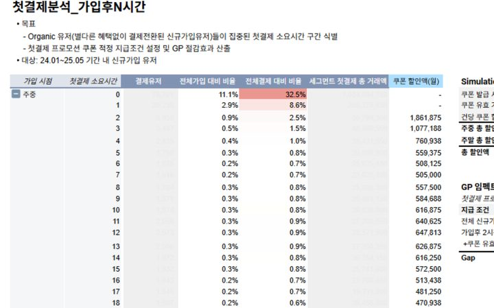
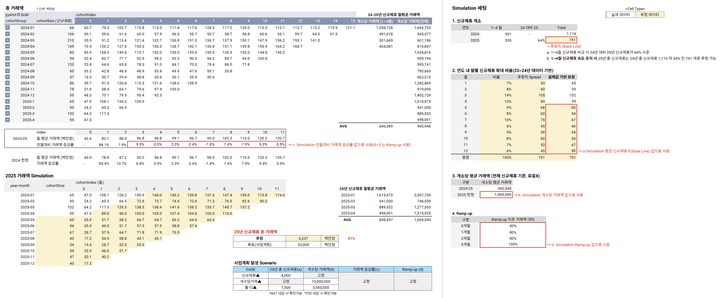
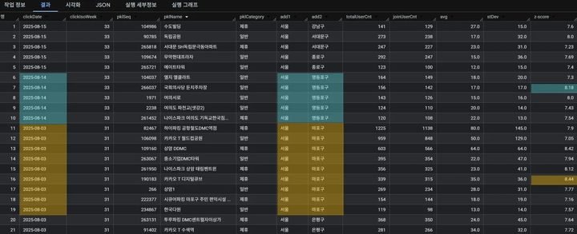
2장이벤트 로그 설계 표준, 지표 SSOT, 분석 결과·의사결정 맥락 저장소 등 분석이 서는 기반
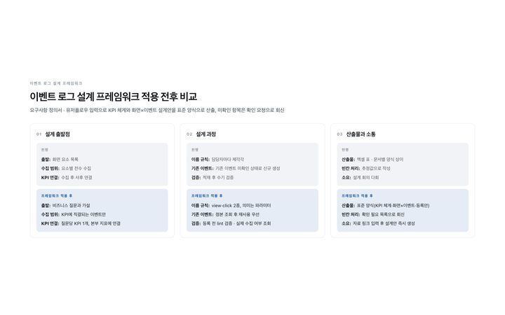
3장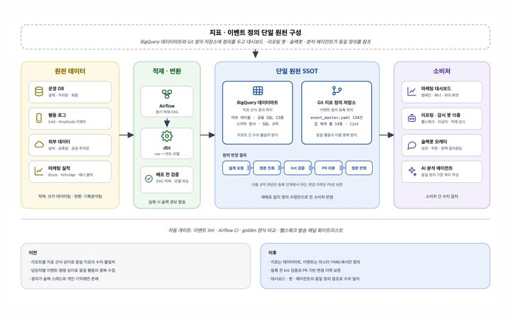
3장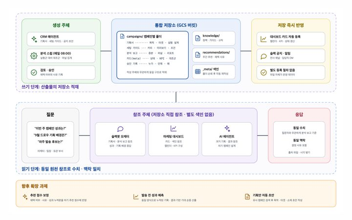
3장주차장·마케팅·자치구 실적을 자동 집계해 매주 보는 Looker Studio 대시보드
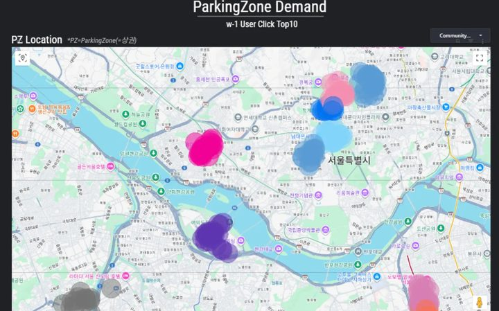
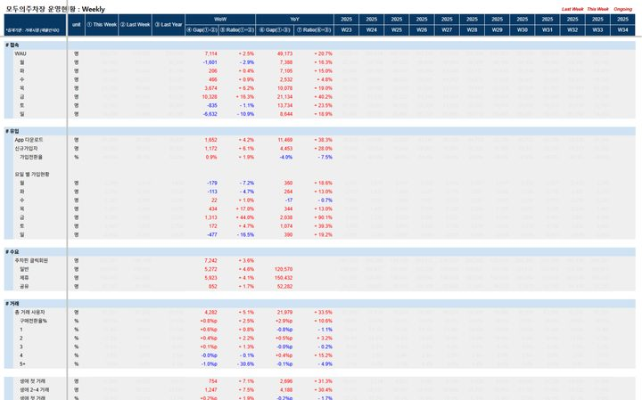
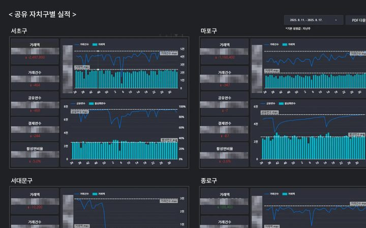
제휴 주차장 공급, 판매중단 시설, 정기권 슬롯을 관리하는 대시보드
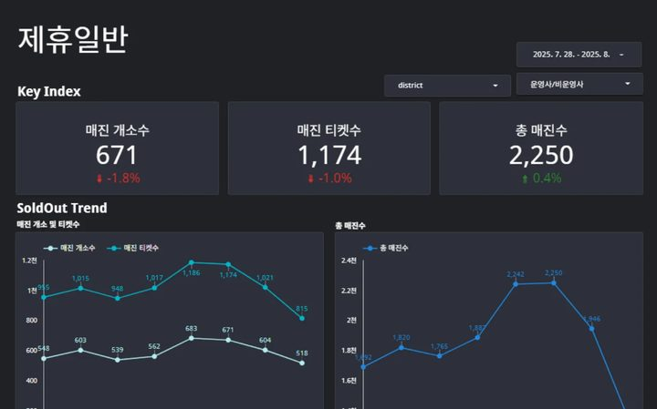
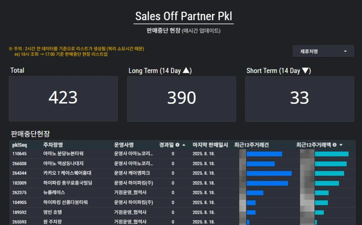
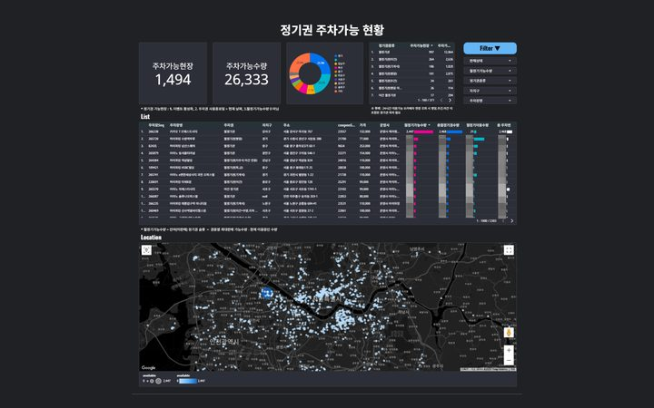
퍼널·코호트·검색 수요 지리공간 분석으로 유저 행동을 보는 리포트와 지도
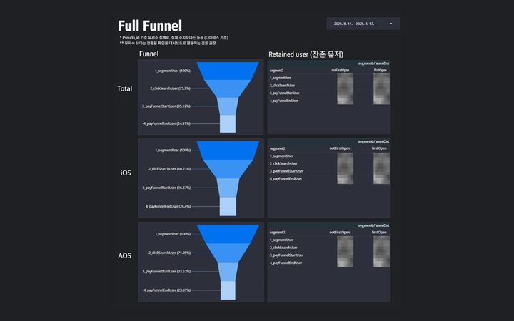
2장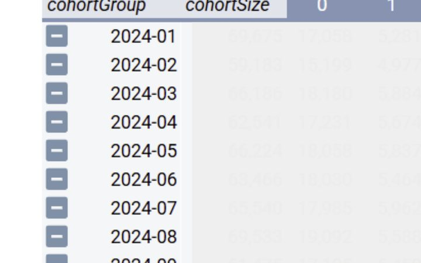
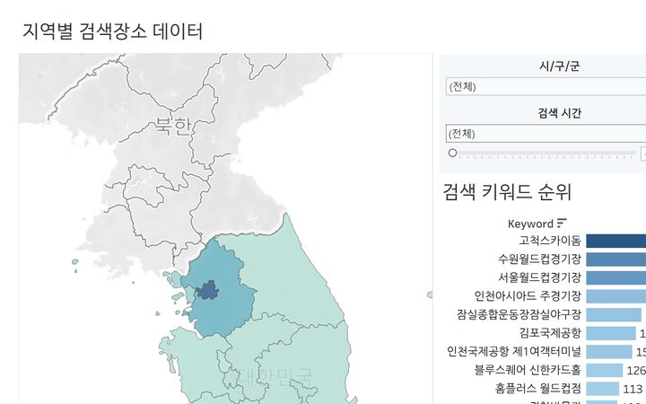
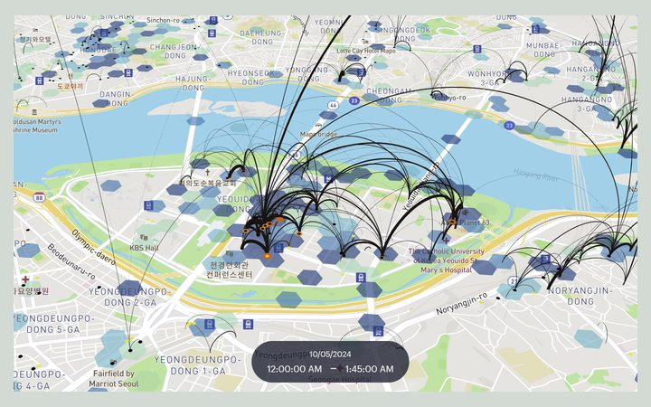
2장